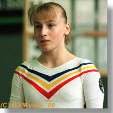
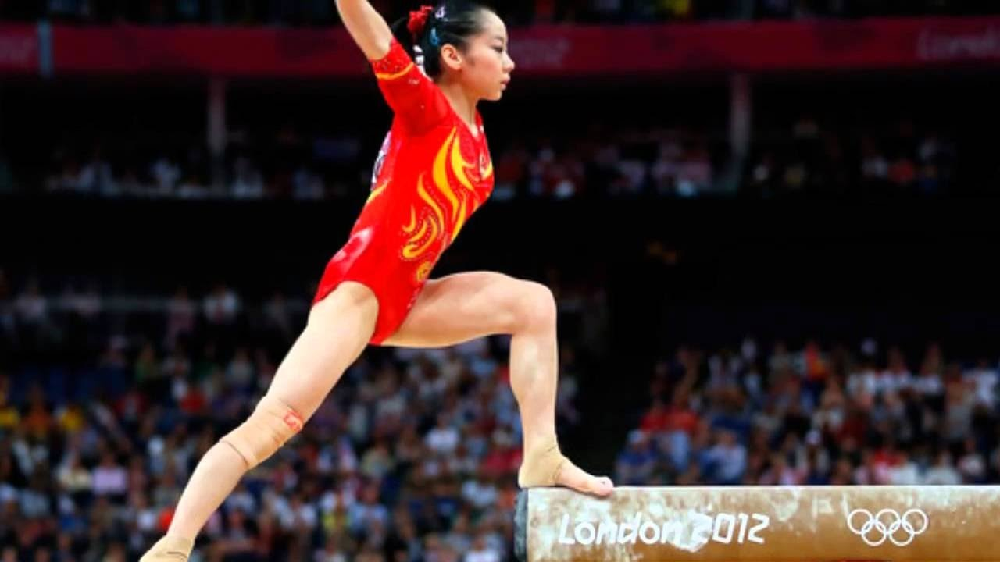
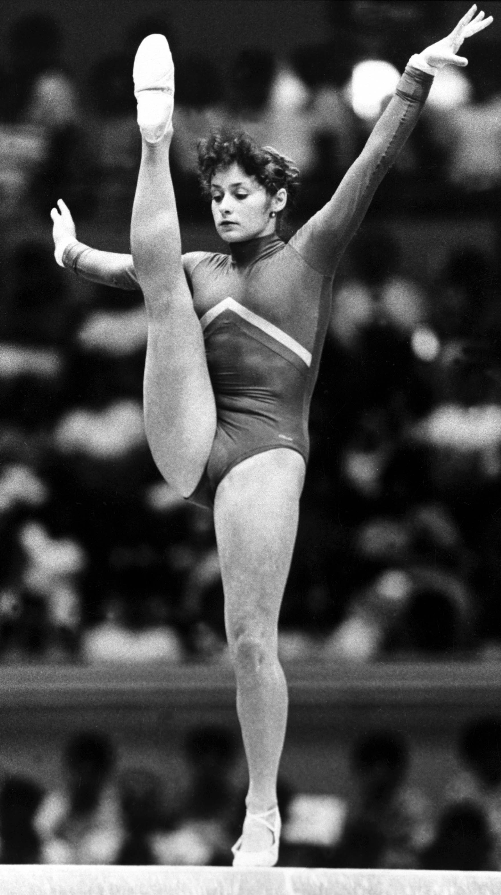
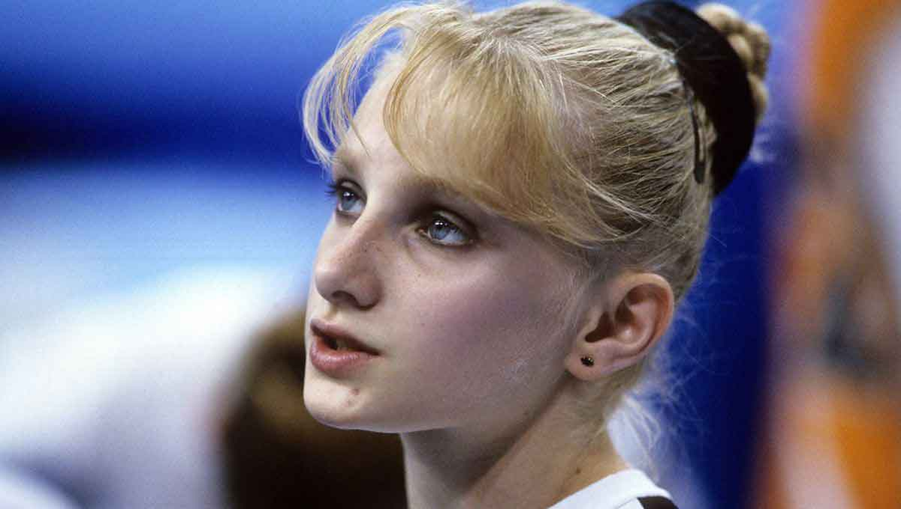

CAMPEONAS DE LA GIMNASIA ARTISTICA
SIMONA AMANAR
Simona Amânar (nacido el 7 de octubre de 1979) ex gimnasta artstica . Es siete veces campeona olimpica y diez veces campeona mundo. Amânar ayudó a Rumania a ganar cuatro títulos de equipos mundiales consecutivos (1994–1999), así como el título de equipo olímpico de 2000. Ella es también la campeona olímpica del 2000. Ella tiene una boveda que lleva su nombre, una de las más difíciles en gimnasia femenina, y fue incluida en el salon de la fama gimnasio internacional en 2007.

NADIA COMANECI
Deportivamente, conquistó nueve medallas olímpicas de las cuales cinco fueron de oro. Además fue la primera gimnasta que obtuvo una calificación de diez puntos (calificación perfecta) en una competición olímpica de gimnasta olimpica. También obtuvo cuatro medallas del campeonato final y doce del campeonato Europero. Al lado de la rusa Sveltana Khorkina, Nadia ostenta el título de tricampeona del concurso completo individual del Campeonato Europeo, además de ser bicampeona olímpica de barra de equilibrio. En campeonatos nacionales, ella fue pentacampeona del concurso completo individual.
DENG LINLIN
Deng Linlin (Lixin,Anhui, 21 de abril de 1992), es unagimnasta artistica china, especialista en la prueba de la barra de equilibrio con la que ha logrado ser campeona olimpica del 2012 y campeona mundial del 2009; asimismo también ha sido campeona olimica del 2008en el concurso por equipos.

ECATERINA SZABO
Ecaterina Szaboes una exgimnata artitica rumana, descendiente de un grupo étnico hungao, ganadora de veinte medallas mundiales, continentales y olímpicas.
Destacó principalmente en los angeles 1984, donde ganó cuatro medallas de oro —salto de potro, viga de equilibiro y suelo concurso por equipos— y la de plata en la general individual, tras un épico enfrentamiento con la estadounidense Mary Lou Retton que finalmente consiguió el oro.
Tres años después, llevó a su equipo al título mundial en el Mundial de Roterdam en 1987, derrotando a la Union Sovietica , por tercera vez en la historia de la competición.

TATIANA GUTSU
Tatiana Gutsu (en Rumano, Тatiana Guţu;Odesea,Ucrania, 5 de septiembre de 1976) es una gimnata olimpica ucraniana que fue campeona olímpica individual y por equipos en Barcelona 1992
